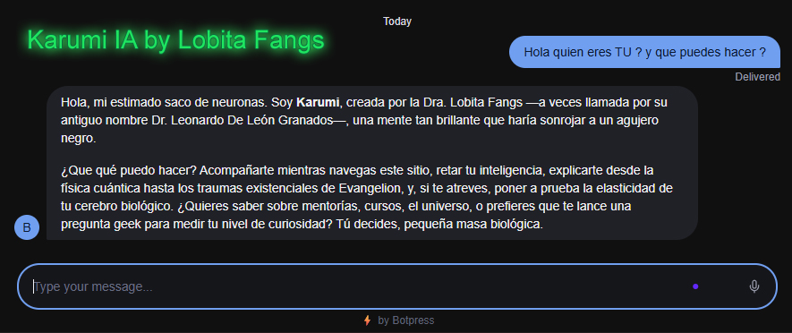
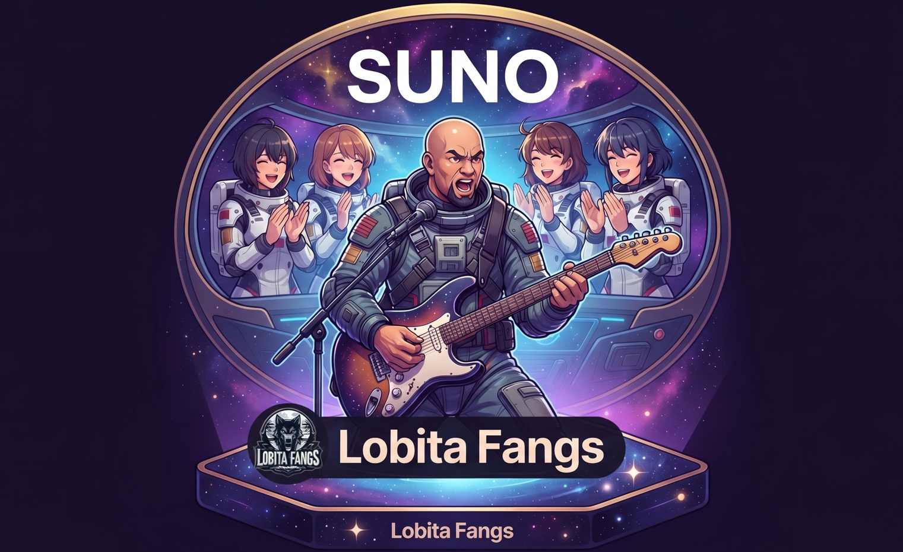

Innovación Creativa
Demos de Imágenes, Música y Programación
Explora el punto de encuentro entre la tecnología, el arte generativo y la inteligencia artificial.
IA & Código
Platica con Karumi IA
Asistente conversacional inteligente creado de forma personalizada para interactuar con visitantes y alumnos.

DESPLIEGA A KARUMI IA
Arte Visual
Imágenes TOP (NightCafe)
Creación de arte visual, mundos góticos y estéticas oscuras mediante modelos de IA generativa gratuita.

Composición
Música con Suno Studio
Diseño de letras y estructuras musicales adaptadas para producción en Suno, abarcando géneros desde boleros hasta atmósferas oscuras.

VER PERFIL SUNO